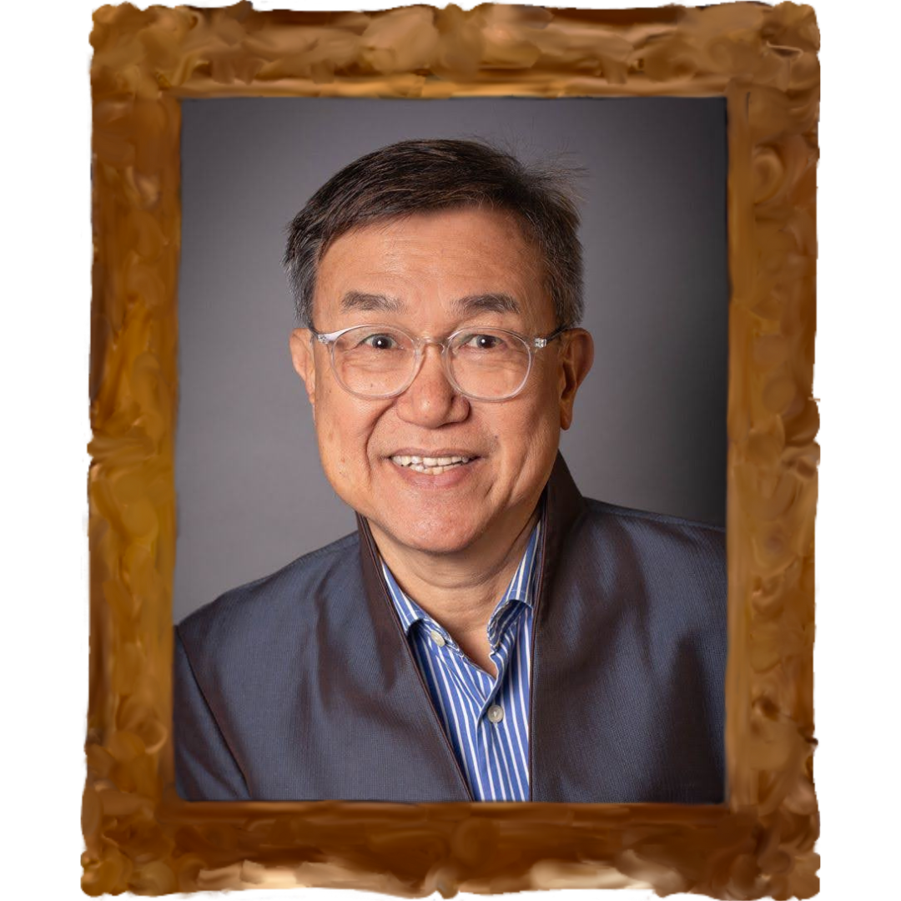
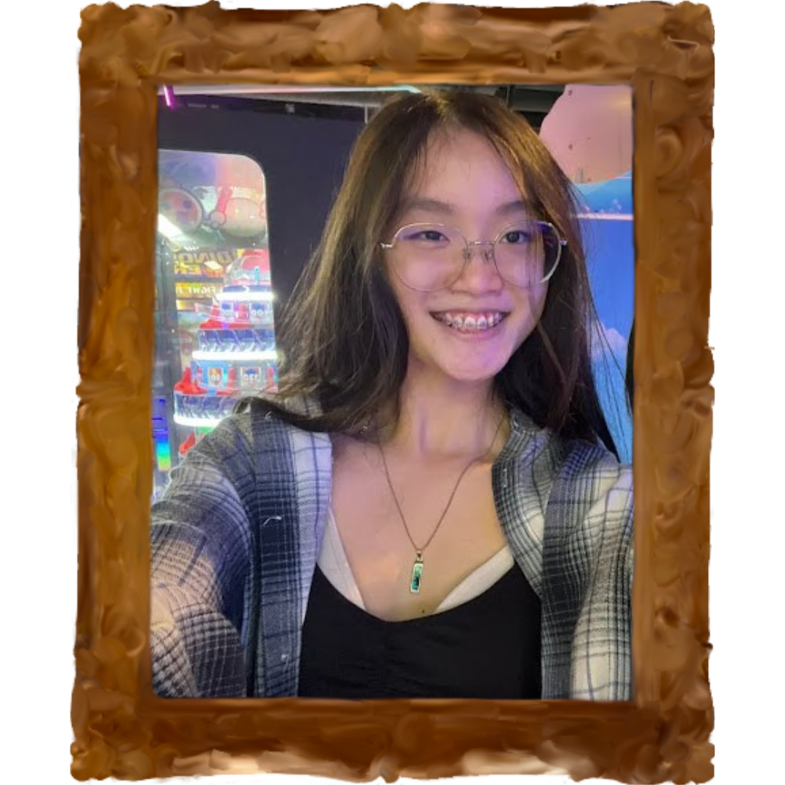
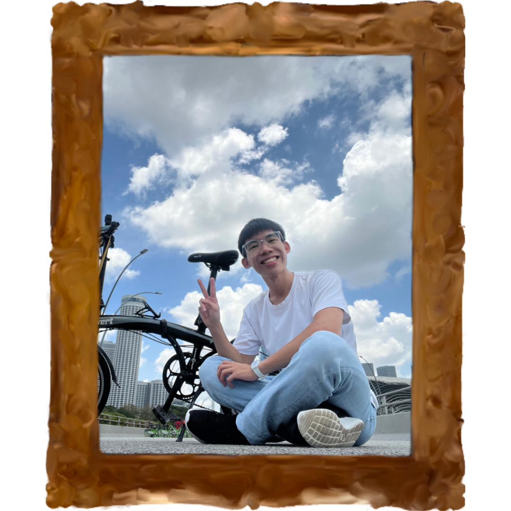
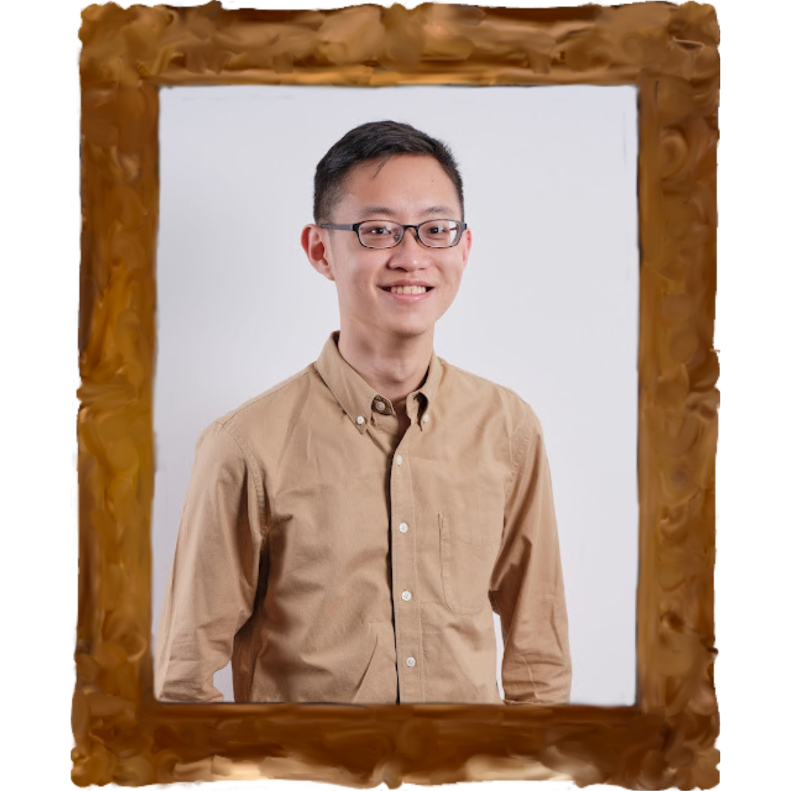
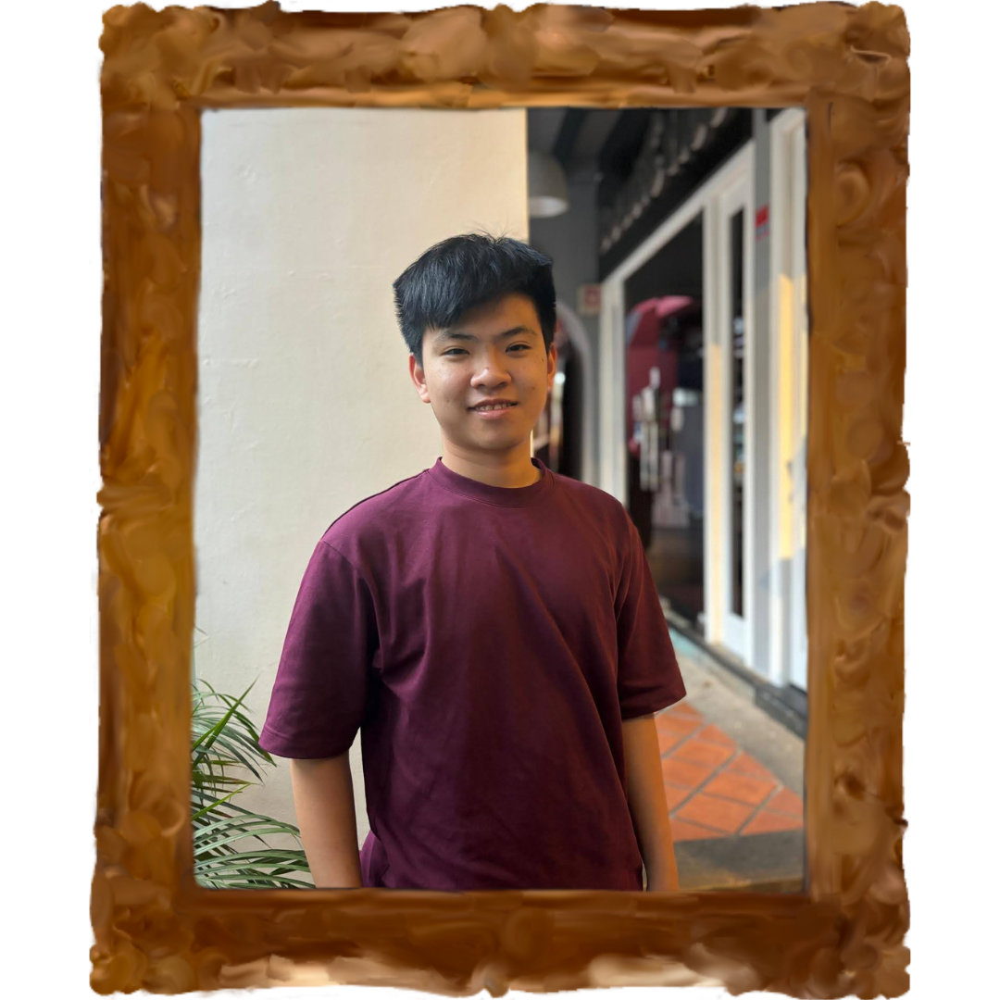

Speakers
Click to find out more!
Guest of Honour
Sub-theme 1: Leaders in Community
Mrs Alya Annabi

Mr Jack Sim

Mr Kei Koga
Sub-theme 2: Pioneers of Change
Mr Wesley Ng

Ms Ng Ray Yen
Ms Ilika Motani
Sub-theme 3: Innovators to Progress

Mr Vareck Ng

Mr Theophilus Kwek

Mr Jovann Loh
⇧